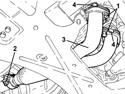

1076B72 INTERMEDIATE EXHAUST PIPE WITH HOSE SECTION - R+R
- Path
- Procedures > 10 ENGINE > 1076 EXHAUST PIPES AND SILENCERS > 1076B EXHAUST PIPES AND SILENCERS > 1076B72 INTERMEDIATE EXHAUST PIPE WITH HOSE SECTION - R+R
- Kind
- repair procedure (removal / refitting; the operation number is the code)
- Applies to
- engines: 1.9 JTS, 2.2 JTS, 1.9 JTD 8V, 1.9 JTD 16V, 2.4 JTD 20V; all production periods
- Interactive page
- https://sloeber94.github.io/elrnDB/alfa/159/en/#/939010612
Applies to: engines: 1.9 JTS, 2.2 JTS; all production periods
 Removing
Removing
 Refitting
Refitting- Position the vehicle on a lift.
1. Undo the bolts fixing the intermediate exhaust pipe to the exhaust manifold and catalytic converter.
2. Loosen the collar securing the intermediate exhaust pipe to the front exhaust silencer.
3. Remove the intermediate exhaust pipe.
4. Remove the seals.

Applies to: engines: 1.9 JTS, 2.2 JTS; all production periods
Refitting
Removing- Place the new seals in their housings.
- Place the intermediate exhaust pipe back in its housing.
- Tighten the collar securing the intermediate exhaust pipe to the front exhaust silencer.
- Tighten the bolts fixing the intermediate exhaust pipe to the exhaust manifold and catalytic converter to the recommended torque.
Component | Fastening | dia | Value (daNm) | Validity |
|---|---|---|---|---|
Intermediate exhaust pipe with flexible section | Bolt | M8 | (exhaust manifold side with catalytic converter) 2.2 - 2.6 | 1.9 JTS 2.2 JTS |
- Remove the vehicle from the lift.
Applies to: engines: 1.9 JTD 8V, 1.9 JTD 16V, 2.4 JTD 20V; all production periods
Removing
Refitting- Position the vehicle on a lift.
Op. 7055B54 UNDER ENGINE PROTECTION/GUARD - R.R.
1. Undo the nuts fixing the intermediate exhaust pipe to the particulate filter DPF.
2. Undo the nuts fixing the intermediate exhaust pipe to the catalytic converter.
3. Unscrew the nuts securing the intermediate exhaust pipe bracket.
4. Remove the intermediate exhaust pipe.
- Remove the seals.

Applies to: engines: 1.9 JTD 8V, 1.9 JTD 16V, 2.4 JTD 20V; all production periods
Refitting
Removing- Place the gaskets in their housings.
1. Place the intermediate exhaust pipe back in its housing.
2. Tighten the nuts securing the intermediate exhaust pipe bracket.
3. Tighten the nuts fixing the intermediate exhaust pipe to the catalytic converter to the specified torque.
Component | Fastening | dia | Value (daNm) | Validity |
|---|---|---|---|---|
Intermediate exhaust pipe with flexible section | Nuts | M8 | (catalytic converter side) 2.2 - 2.6 | 1.9 JTD 8V 1.9 JTD 16V 2.4 JTD 20V |
4. Tighten the nuts fixing the intermediate exhaust pipe to the particulate filter to the specified torque.
Component | Fastening | dia | Value (daNm) | Validity |
|---|---|---|---|---|
Intermediate exhaust pipe with flexible section | Nuts | M8 | (D.P.F. particle filter side) 1.2 - 2.6 | 1.9 JTD 8V 1.9 JTD 16V 2.4 JTD 20V |

Applies to: engines: 1.9 JTD 8V, 1.9 JTD 16V, 2.4 JTD 20V; all production periods
Op. 7055B54 UNDER ENGINE PROTECTION/GUARD - R.R.
- Remove the vehicle from the lift.
Topics linked from this page (1)
Topics that link to this page (20)
- 1004B10 POWER UNIT WITH MANUAL GEARBOX - R.R
- 1008B20 POWER UNIT INTERMEDIATE MOUNT FLEXIBLE BLOCK - REPLACE
- 1020A20 CRANKCASE OIL SUMP - R.R CLEAN SURFACES FOR SEALANT APPLICATION
- 1020A26 CRANKCASE SUMP - R.R CLEAN MATING SURFACES AND APPLY SEALANT FOR VEHICLES WITH AIR CONDITIONING
- 1020D14 FRONT CRANKSHAFT OIL SEAL COVER - R.R AND REPLACE SEALS FOR VERSIONS WITH OIL PUMP ON CRANKSHAFT, TIMING SIDE
- 1020D38 FLYWHEEL SIDE OIL SEAL - REPLACE
- 1020D26 FLYWHEEL SIDE OIL SEAL COVER - R.R AND REPLACE GASKETS
- 1024B10 ENGINE FLYWHEEL - R + R FOR VERSIONS WITH MANUAL GEARBOX
- 1064A27 TURBOCHARGER UNIT AND EXHAUST MANIFOLD - R.R.
- 1076A42 FRONT EXHAUST SILENCER FRONT HEAT SHILED R R
- 1080B62 CATALYTIC CONVERTER - R + R
- 1084B26 ENGINE OIL INTAKE DUCT - R.R
- 1084B40 ENGINE OIL DELIVERY PIPE TO TURBOCHARGER - R + R
- 1084B42 ENGINE OIL RETURN PIPE FROM TURBO - R + R
- 1810A20 CLUTCH - R + R
- 1820B30 CLUTCH HYDRAULIC ACTUATOR - R.R.
- 2110A10 MANUAL GEARBOX AND DIFFERENTIAL - R + R
- 3340B67 RIGID PIPE FROM RIGHT REAR BRAKE CONNECTOR - R.R.
- 4410C10 FRONT SUSPENSION ANTI-ROLL BAR - R+R - CHECK WHEEL GEOMETRY SEPARATELY
- 4410D10 FRONT SUSPENSION FRAME - R+R